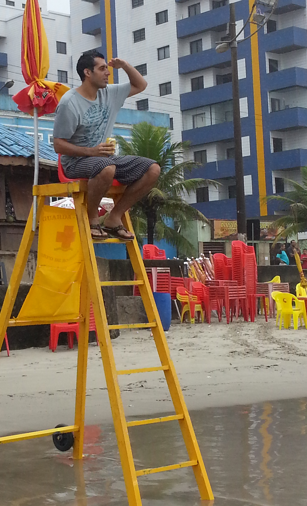

Olá! Seja bem vindo a minha pagina pessoal
Me chamo Ricardo Marcos de Freitas
Nascido e criado em São Paulo, aos 36 anos resolvi expandir meus conhecimentos e buscar novos horizontes e optei pela área da Tecnologia. Iniciei em 2017 o curso Sistemas para Internet na Instituição SENAC Campus Sto. Amaro onde já havia cursado em 2016 Técnico em Seguros, ramo em que atuo desde então.
Além do curso Técnico em Seguros, sou formado em Marketing pela Universidade Nove de Julho (UNINOVE) e apresar de nunca ter atuado na área consegui aplicar e ainda aplico muito do que aprendi em MKT no meu atual ramo e na vida pessoal.
Esta página mostra um pouco do que aprendi durante o curso e que apesar de básica, para mim representa uma grande evolção nos meus conhecimentos tecnológicos, uma vez que nunca havia tido acesso a esse tipo de conteúdo .
Falarei um pouco mais detalhado sobre mim nas proximas paginas.
